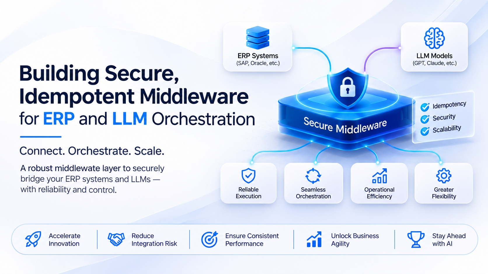

Building Secure, Idempotent Middleware for ERP and LLM Orchestration

An LLM that can read an ERP is a convenience. An LLM that can write to one is a risk, unless something sits between them. That layer is middleware, and it decides whether a retried request creates one purchase order or three, and whether an agent can see payroll when it only needed inventory.
Why Middleware Is Required
LLMs retry, time out, and sometimes repeat a tool call because they are unsure the first one worked. ERP systems, by contrast, treat each write as final. A duplicated goods receipt or journal entry is not a minor glitch. It changes inventory, ledgers, and reports.
That is why production-grade ERP generative AI integration never lets a model call the ERP directly. A controlled layer validates, authorizes, deduplicates, and logs every action first.
Reference Architecture
User / Agent
|
LLM Orchestrator (plans steps, proposes tool calls)
|
Middleware (auth, validation, idempotency, policy, audit)
|
ERP Adapter (maps to the ERP's APIs and business rules)
|
ERP System- Orchestrator: Decides which tool to call, but holds no ERP credentials.
- Middleware: The only component allowed to talk to the adapter.
- Adapter: Translates one stable internal contract into each ERP's specific API.
Making Writes Idempotent
An operation is idempotent when running it twice has the same effect as running it once. For ERP writes, this means every mutating request carries a unique key, and the middleware remembers what it did with that key.
POST /v1/purchase-orders
Idempotency-Key: po-7f3a91c2-ordered-2026-11-17
Content-Type: application/json
{ "vendor_id": "V-1042", "lines": [{ "sku": "A-77", "qty": 40 }] }- Generate the key from intent, not from the attempt. Derive it from the task and its inputs so a retry produces the same key.
- Store the key before acting. Record it as "in progress" in a durable store with a unique constraint.
- Return the saved result on repeat. If the key already exists, send back the original response and skip the ERP call.
- Handle the in-progress case. Reject or wait on a second request that arrives while the first is still running.
- Expire keys deliberately. Keep them long enough to cover realistic retry windows.
Securing the Layer
| Control | What it prevents |
|---|---|
| Least-privilege service accounts | An agent reaching data or functions it does not need |
| User identity pass-through | The model acting with more rights than the person who asked |
| Schema validation on every tool call | Malformed or injected parameters reaching the ERP |
| Allow-list of tools and actions | Unexpected operations proposed by the model |
| Field-level redaction | Sensitive values leaving the ERP in prompts |
| Secrets in a vault | Credentials appearing in prompts, logs, or code |
| Immutable audit log | Actions that cannot be traced to a person and a request |
Treat everything the model returns as untrusted input. Instructions hidden inside a document or a vendor note should never be able to widen what the agent is allowed to do.
Orchestrating LLM Steps
- Separate read from write. Reads can be broad and cached. Writes go through approval and idempotency checks.
- Use a plan, then execute. Have the model propose steps, validate the plan, then run each step with its own key.
- Require approval by risk. Auto-run low-risk, reversible actions and route financial or irreversible ones to a person.
- Keep state outside the model. Store workflow progress in the middleware so a restart can resume safely.
Handling Failure
- Retries use backoff and the same idempotency key
- Timeouts are treated as unknown, then reconciled by querying the ERP
- Partial multi-step workflows have compensating actions
- Failed jobs move to a dead-letter queue for review
- Rate limits protect the ERP from bursts of agent traffic
Testing and Rollout
- Replay tests. Send the same request many times and confirm only one ERP effect.
- Fault injection. Drop responses and kill processes mid-workflow to verify recovery.
- Permission tests. Confirm users cannot reach data outside their access through the agent.
- Sandbox first. Run against a test ERP client, then shadow mode, then limited production.
- Monitor. Track duplicate-blocked counts, approval rates, latency, and cost per workflow.
FAQs
What does idempotent mean for ERP writes?
It means a repeated request has the same effect as the first one, so a retry cannot create a duplicate order, receipt, or journal entry.
Why not let the LLM call the ERP API directly?
Direct calls skip validation, authorization, deduplication, and audit. Middleware adds those controls in one place.
How should idempotency keys be generated?
Derive them from the intent and inputs of the task, not from a random value per attempt, so retries reuse the same key.
How do we stop prompt injection from causing bad writes?
Validate every tool call against a schema and an allow-list, pass user identity through, and require approval for high-risk actions.
Does this work with any ERP?
The pattern is ERP-agnostic. An adapter layer maps a stable internal contract to each system's APIs. Check each vendor's current API limits and terms.
Conclusion
Safe LLM and ERP integration comes down to a few durable habits: a controlled middleware layer, idempotent writes, least-privilege access, risk-based approval, and full audit. Build those first, and the model becomes a dependable participant in your business processes instead of a liability.